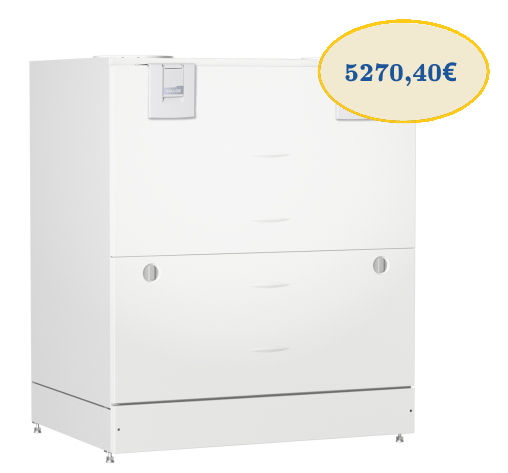

Vallox 245 MV
Подходит для больших частных домов и коммерческих помещений
Вентиляционная установка Vallox 245 MV подходит для больших частных домов и коммерческих помещений (школы, детские сады, офисы). В машину встроены датчики углекислого газа и влажности, которые можно использовать для автоматизации работы вентиляции. Датчики летучих органических соединений и дополнительные датчики влажности также доступны в качестве аксессуаров. Вентиляционная установка Vallox 245 MV может быть подключена к бесплатному облачному сервису MyVallox Cloud, через который можно управлять установкой с подключением к Интернету из любого места. Компьютер, зарегистрированный в облачной службе, обновляется автоматически.